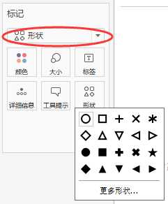
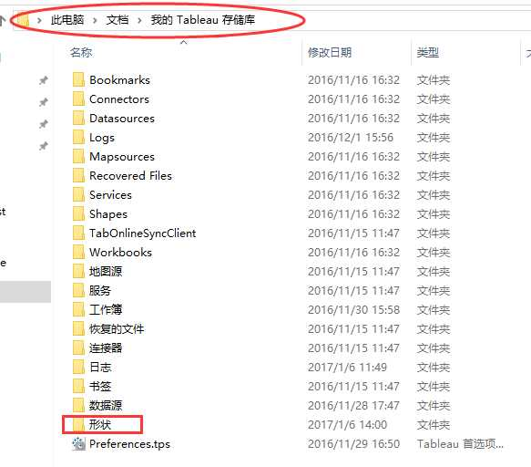
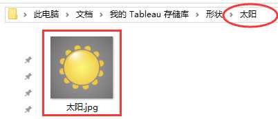
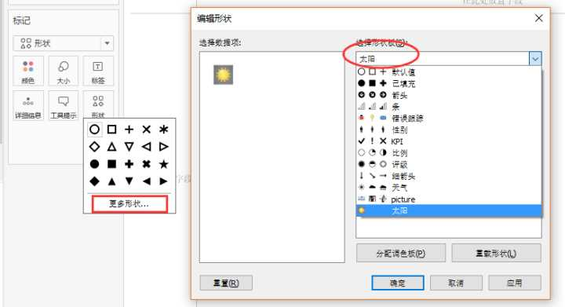

Tableau技巧：如何插入自定义形状
我们先来了解一下Tableau里的形状是什么。
在标记卡里的下拉菜单中，选择“形状”，然后点击“形状卡”，会出现Tableau自带的一些形状。 
如果，我们需要的形状，Tableau里面没有，该怎么办呢？
找到想要的形状
首先得找到想要的形状，以图片的形式保存到电脑中，例如下面的这个太阳图形。
把形状放入存储库
把这个形状的图片放到Tableau存储库中的形状文件夹中（一般在我的文档里），如下图： 
添加文件夹并命名
在形状文件夹中，能看到很多文件夹，这些都是Tableau自带的形状。
接着，添加一个新的文件来摆放我们的“形状”。 
把文件夹命名为太阳，并把图片放到里面。
这时候，试着打开一个新的Tableau工作簿，打开形状标记卡，看看里面的变化。 
可以看到，太阳形状已经插入到Tableau的形状包里面了。需要用到太阳形状时，打开形状包选中它即可哦！